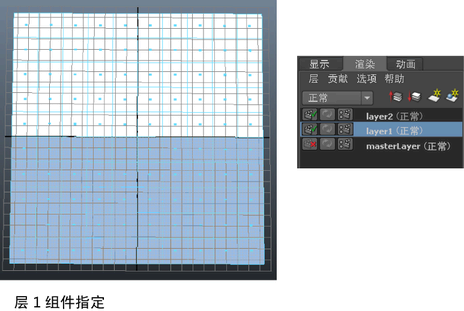
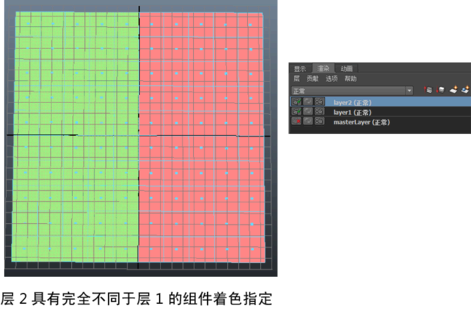

注： 提供的
新渲染设置系统现已取代传统渲染层，是 Maya 中的
默认系统。这种新方法可简化复杂场景的管理以便进行渲染，如今已成为建议的工作流。有关详细信息，请参见
Maya 渲染设置。
现在，可以为每个渲染层指定不同的组件着色组。例如，假设层一和层二上各有一个平面。在层一中，可以将半个面指定给白色着色器，另半个面指定给蓝色着色器。在层二中，可以将半个面指定给绿色着色器，另半个面指定给红色着色器。


为每个渲染层指定不同的组件着色
- 选择要指定组件着色的渲染层。
- 在对象上单击鼠标右键，并选择“面”(Face)以转化为“面”(Face)模式。
- 选择要指定着色组的组件。
- 单击鼠标右键并选择“指定新材质”(Assign New Material)或“指定现有材质”(Assign Existing Material)，为选定组件指定着色组。
- 选择第二个要指定组件着色的渲染层。
- 在对象上单击鼠标右键，并选择“面”(Face)以转化为“面”(Face)模式。
在该层中，可以指定与第一个层不同的组件着色组。